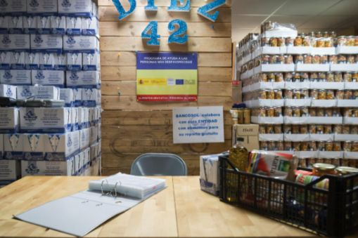
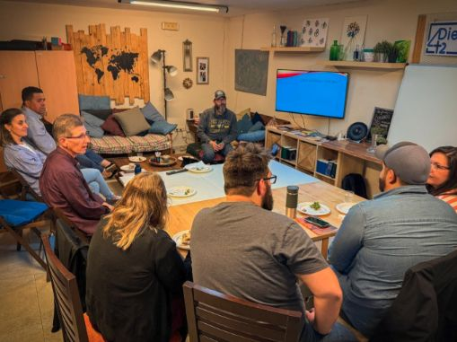
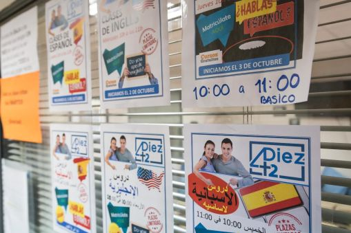
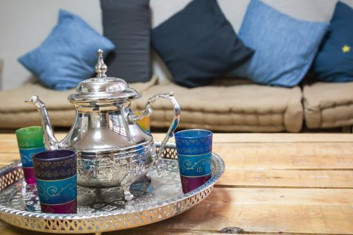
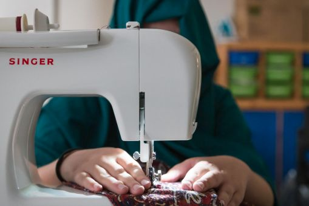

Practical support
Food support, orientation, and everyday help for families finding their footing in Málaga.
Asociación para el Desarrollo e Integración Diez42
Diez42 walks with immigrants, refugees, and other newcomers through food support, classes, family activities, training, and community connection.
v103.0

About
Diez42 serves newcomers in Málaga through practical support, education, training, family activities, food support, and community connection.

Food support, orientation, and everyday help for families finding their footing in Málaga.

Language practice, job training, children's activities, and learning paths that open doors.

A local place for relationship, encouragement, family activities, and belonging.

Hands-on projects, creative training, and practical skills that help people build confidence.
Asociación para el Desarrollo e Integración Diez42.
Registered 27 April 2021, CIF G93613776, Málaga provincial scope.
Social channels appear under diez42malaga / Diez42Malaga.